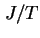
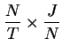

สมมุติว่าเราเฝ้าสังเกตระบบอยู่ในช่วงเวลา  และทำการบันทึกการเข้าใช้งาน และการเสร็จสิ้นการบริการ ของแต่ละงาน ถ้าช่วงเวลา
และทำการบันทึกการเข้าใช้งาน และการเสร็จสิ้นการบริการ ของแต่ละงาน ถ้าช่วงเวลา  นานพอ จำนวนงานที่เข้าใช้ระบบ จะใกล้เคียงกับจำนวนงานที่เสร็จสิ้นการบริการจากระบบ (ออกจากระบบ) ให้จำนวนดังกล่าวเท่ากับค่า
นานพอ จำนวนงานที่เข้าใช้ระบบ จะใกล้เคียงกับจำนวนงานที่เสร็จสิ้นการบริการจากระบบ (ออกจากระบบ) ให้จำนวนดังกล่าวเท่ากับค่า  เราจะได้
เราจะได้
| (3.4) |
ดังแสดงในรูป 3.4 สามารถเขียนกราฟแสดงความสัมพันธ์ดังกล่าวได้ 3 ลักษณะ รูป 3.4 (a) แสดงงานที่เข้าใช้ระบบทั้งหมดเทียบกับเวลา ถ้าเราพิจารณาจำนวนงานที่อยู่ในระบบเทียบกับเวลาจะได้กราฟในรูป 3.4 (b) ในอีกทางหนึ่งถ้าเราพิจารณาว่างานที่เข้ามาในระบบ ใช้เวลาไปเท่าไรในแต่ละงาน จะได้ในรูป 3.4 (c)
พิจารณาพื้นที่ที่แลเงาจะพบว่า ทั้งสามกราฟมีพื้นที่เท่ากัน ซึ่งเท่ากับเวลาทั้งหมดที่ใช้ในระบบของทุกงานที่เข้ามา ให้พื้นที่ดังกล่าวเท่ากับ
จากรูป 3.4 (c)
| (3.5) |
จากรูป 3.4 (b)
|  | |||
|  | |||
ข้อสำคัญประการหนึ่งของกฎของ Little คือสามารถใช้งานได้กับทุกระบบ และทุกระบบย่อย ตัวอย่างเช่น ถ้าเราใช้กับบัฟเฟอร์ในคิวสำหรับงานที่รอรับบริการ (ในรูป 3.5) จะได้
| (3.6) |
เช่นเดียวกัน ถ้าเราใช้กับงานที่กำลังรับบริการอยู่ จะได้สมการ
| (3.7) |